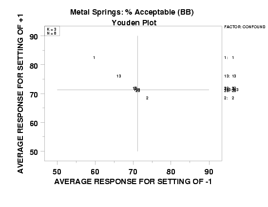

5.
Process Improvement
5.5.
Advanced topics
5.5.9.
An EDA approach to experimental design
|
|
Purpose
|
The DOE (design of experiments) Youden plot answers the following
question:
What are the important factors (including interactions)?
In its original interlab rendition, the
Youden plot was a
graphical technique developed in the 1960's by Jack Youden of NIST for
assessing between-lab biases and within-lab variation problems in
the context of interlab experimentation. In particular, it was
appropriate for the analysis of round-robin data when exactly two
materials, batches, etc. were used in the design.
In a design of experiments context, we borrow this duality emphasis
and apply it to 2-level designs. The 2-component emphasis of the
Youden plot makes it a natural to be applied to such designs.
|
|
Output
|
The DOE Youden plot provides specific information on
- Ranked list of factors (including interactions); and
- Separation of factors into two categories:
important and unimportant.
The primary output from a DOE Youden plot is the ranked list of
factors (out of the k factors and interactions). For full
factorial designs, interactions include the full complement of
interactions at all orders; for fractional factorial designs,
interactions include only some, and occasionally none, of the
actual interactions. Further, the DOE Youden plot yields information
identifying which factors/interactions are important and which
are unimportant.
|
|
Definition
|
The DOE Youden plot consists of the following:
- Vertical Axis: Mean response at the "+" setting for each
factor and each interaction. For a given factor or interaction,
n/2 response values will go into computing the "+" mean.
- Horizontal Axis: Mean response at the "-" setting for each factor
and each interaction. For a given factor or interaction,
n/2 response values will go into computing the "-" mean.
- Plot Character: Factor/interaction identification for which
1 indicates factor X1;
2 indicates factor X2;
...
12 indicates the 2-factor X1*X2 interaction
123 indicates the 3-factor X1*X2*X3
interaction
etc.
In essence, the DOE Youden plot is a scatter plot of the
"+" average responses versus the "-" average responses. The
plot will consist of n - 1 points with one point for each factor
and one point for each (available) interaction. Each point on the plot
is annotated to identify which factor or interaction is being
represented.
|
|
Motivation
|
Definitionally, if a factor is unimportant, the "+"
average will be approximately the same as the "-" average, and if a
factor is important, the "+" average will be considerably
different from the "-" average. Hence a plot that compares the
"+" averages with the "-" averages directly seems potentially
informative.
From the definition above, the DOE Youden plot is a scatter plot with
the "+" averages on the vertical axis and the "-" averages on the
horizontal axis. Thus, unimportant factors will tend to cluster
in the middle of the plot and important factors will tend to be far
removed from the middle.
Because of an arithmetic identity which requires that the average of
any corresponding "+" and "-" means must equal the grand mean,
all points on a DOE Youden plot will lie on a -45 degree diagonal line.
Or to put it another way, for each factor
average (+) + average (-) = constant (with constant = grand mean)
So
average (+) = constant - average (-)
Therefore, the slope of the line is -1 and all points lie on the line.
Important factors will plot well-removed from the center because
average (+) = average (-) at the center.
|
|
Plot for defective springs data
|
Applying the DOE Youden plot for the defective springs data set
yields the following plot.

|
|
How to interpret
|
In the DOE Youden plot, we look for the following:
- A ranked list of factors (including interactions).
The intersecting dotted lines at the center of the
plot are the value of the grand mean on both the vertical
and horizontal axes. Scan the points along the negative-slope
diagonal line and note as to whether such points are clustered
around the grand mean or are displaced up or down the
diagonal line.
- Which point is farthest away from the center?
This defines the "most important" factor.
- Which point is next farthest away from the center?
This defines the "second most important" factor.
- Continue in a similar manner for the remaining points.
The points closest to the center define the "least
important" factors.
- Separation of factors into important/unimportant categories.
Interpretationally, if a factor is unimportant,
the "+" average will be about the same as the "-" average,
so the plot of "+" vertically and "-" horizontally will be near
the grand mean of all n - 1 data points.
Conversely, if a factor is important, the "+" average will
differ greatly from the "-" average, and so the plot
of "+" vertically and "-" horizontally will be considerably
displaced up into the top left quadrant or down into the bottom
right quadrant.
The separation of factors into important/unimportant
categories is thus done by answering the question:
Which points visually form a cluster around the center?
(these define the "unimportant factors"--all remaining
factors are "important").
This ranked list of important factors derived from the DOE
Youden plot is to be compared with the ranked lists
obtained from previous steps. Invariably, there will be a
large degree of consistency exhibited across all/most of
the techniques.
|
|
Conclusions for the defective springs data
|
The application of the DOE Youden plot to the defective springs
data set results in the following conclusions:
- Ranked list of factors (including interactions):
- X1 (most important)
- X1*X3 (next most important)
- X2
- other factors are of lesser importance
- Separation of factors into important/unimportant categories:
- "Important": X1, X1*X3, and X2
- "Unimportant": the remainder
|


{kind=link}